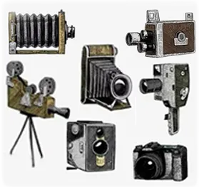
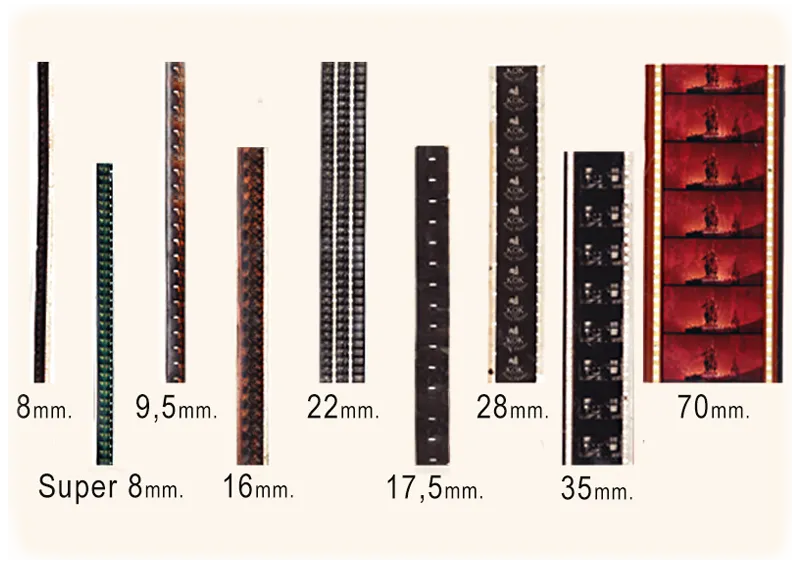
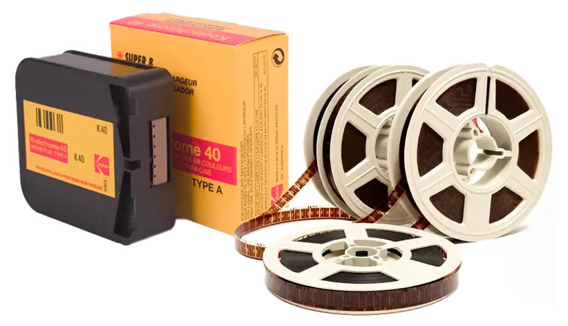
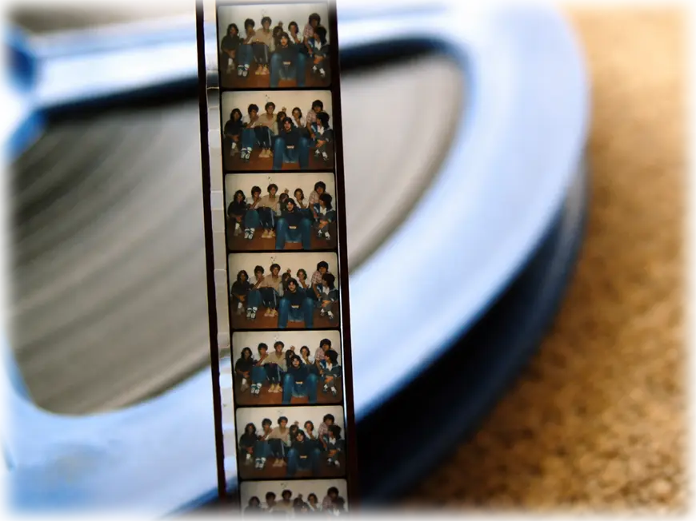

¿QUÉ ES EL SUPER 8?
Mucho antes de la aparición del vídeo digital, los teléfonos móviles o internet, el cine funcionaba de una manera completamente distinta. Las imágenes no se almacenaban como archivos electrónicos ni como datos informáticos, sino sobre una cinta física y fotosensible llamada película o celuloide.
El Praxinoscopio, uno de los primeros aparatos que generaba animación.
El origen del cine se encuentra en una curiosa característica del ojo humano: cuando observamos imágenes fijas a gran velocidad, nuestro cerebro las interpreta como si estuvieran en movimiento. A partir de este fenómeno surgieron durante el siglo XIX numerosos experimentos basados en dibujos y fotografías sucesivas capaces de crear la ilusión de movimiento. Aquellos sencillos inventos acabarían desembocando en el nacimiento del cinematógrafo.

El Cinematografo de los hermanos Lumiere.
Las películas estaban formadas por largas bandas de celuloide llenas de pequeñas fotografías consecutivas llamadas fotogramas. Al proyectarse rápidamente —generalmente entre 18 y 24 imágenes por segundo— las figuras parecían cobrar vida en la pantalla.

Formatos de película en celuloide
Con el tiempo aparecieron distintos formatos cinematográficos. El tamaño físico de la película determinaba tanto la calidad de imagen como el coste de producción. El 35 mm se convirtió en el estándar profesional utilizado en salas de cine comerciales, mientras que formatos más pequeños y económicos, como el 16 mm o el 8 mm, facilitaron el acceso al cine amateur, educativo y doméstico.

Película Super 8 mm virgen y revelada
En 1965 Kodak lanzó el Super 8, una evolución muy mejorada del antiguo 8 mm. Sus cartuchos eran más fáciles de cargar, las cámaras más compactas y la calidad de imagen considerablemente superior para la época. Gracias a ello, muchas personas pudieron filmar vacaciones, reuniones familiares o incluso pequeños cortometrajes de ficción.

Fotogramas de un trozo de película Super 8mm.
A diferencia de la tecnología actual, donde un simple teléfono móvil permite grabar horas de vídeo sin apenas coste, el Super 8 utilizaba película fotoquímica real. Cada segundo filmado quedaba físicamente impresionado sobre el celuloide y debía ser posteriormente revelado antes de poder verse proyectado en una pantalla.
Precisamente esa combinación de limitaciones técnicas, textura fotoquímica y trabajo artesanal es lo que convierte hoy al Super 8 en un formato tan especial y fascinante para muchas personas.